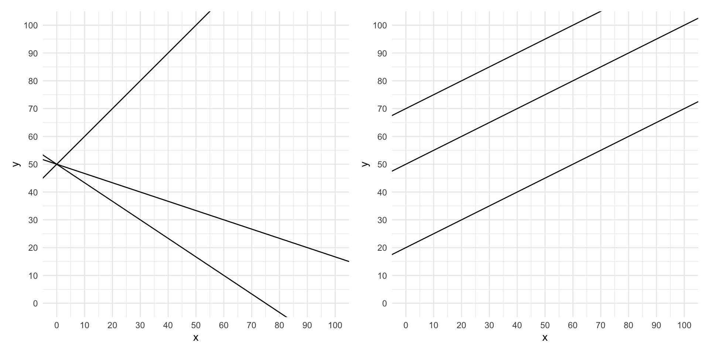
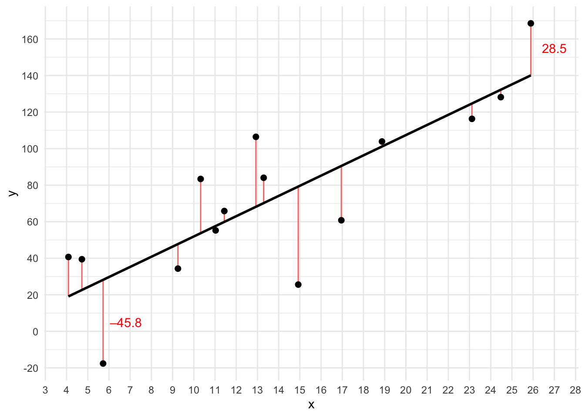
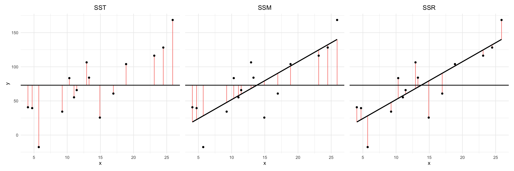
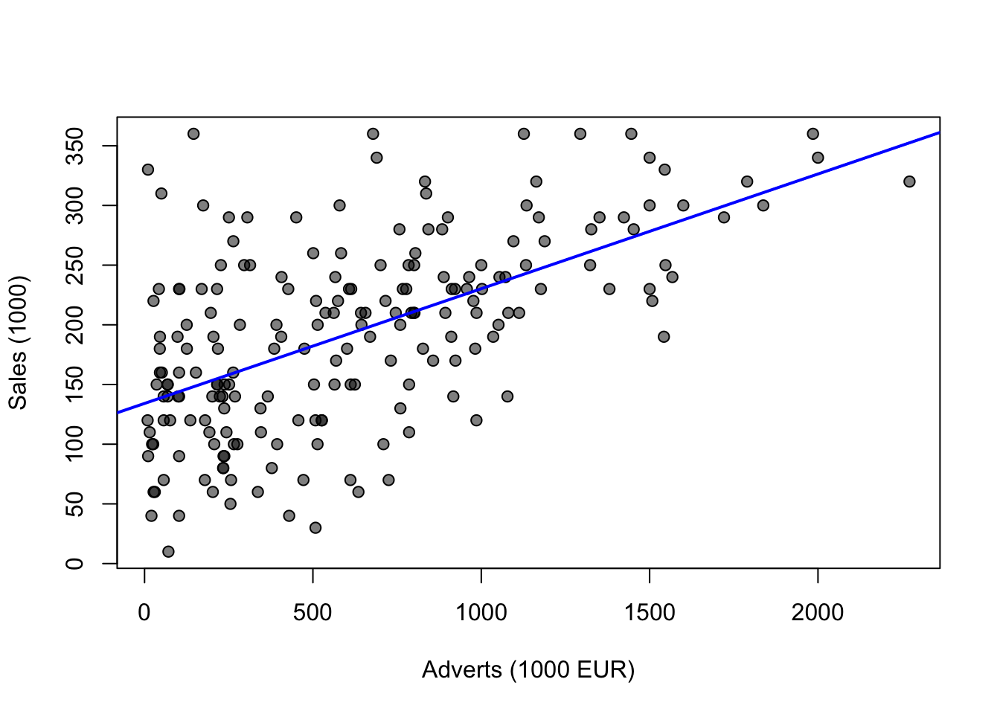

Einfache lineare Regression
Wir haben gesehen, dass man über die Korrelation die Beziehung zwischen zwei Variablen beschreiben kann. Man kann nun einen Schritt weiter gehen und versuchen, eine Variable durch die andere “vorherzusagen”. Eine weit verbreitete Methode dafür ist die lineare Regression, welche eine abhängige Variable durch eine unabhängige Variable (einfache Regression) bzw. durch mehrere unabhängige Variablen (multiple Regression) zu erklären versucht.
Ein allgemeines statistisches Modell kann man generell wie folgt aufstellen:
\[\mathrm{outcome}_i = \mathrm{model}_i + \mathrm{error}_i\]
Man beschreibt also die gemessenen Daten durch ein Modell, welches im Allgemeinen aber immer Fehler machen wird (d.h. es beschreibt die gemessenen Daten nicht perfekt). Um diese Formel kürzer anschreiben zu können, setzt man \(\mathrm{outcome}_i = y_i\), \(\mathrm{model}_i = \hat{y}_i\) und \(\mathrm{error}_i = \varepsilon_i\):
\[y_i = \hat{y}_i + \varepsilon_i\]
Im Fall der linearen Regression ist das Modell \(\hat{y}_i\) linear, also eine Gerade. Die Gleichung kann daher wie folgt angeschrieben werden:
\[y_i = \underbrace{\left(b_0 + b_1 x_i\right)}_{\hat{y}_i} + \varepsilon_i\]
Hinweis
Eine Geradengleichung kann in der Form \(y = k \cdot x + d\) angeschrieben werden. Die zwei Parameter \(k\) und \(d\) sind wie folgt definiert:
Der Schnittpunkt mit der y-Achse \(d\) entspricht dem Wert von \(y\) an der Stelle \(x=0\).
Die Steigung \(k\) ist das Verhältnis der Änderung von \(y\) (wird als \(\Delta y\) geschrieben) zur Änderung von \(x\) (wird als \(\Delta x\) geschrieben):
\[k = \frac{\Delta y}{\Delta x}\]
Die Parameter \(b_0\) und \(b_1\) beschreiben daher den Schnittpunkt der Geraden mit der y-Achse (Intercept) bzw. die Steigung der Geraden und werden als Regressionskoeffizienten bezeichnet. Der Term \(\varepsilon_i\) beschreibt den Fehler zwischen den vom Modell vorhergesagten Wert \(\hat{y}_i\) und dem tatsächlich gemessenen Wert \(y_i\).
Das tiefgestellte \(i\) steht für den \(i\)-ten Datenpunkt (von insgesamt \(N\)). Das Modell gilt also für alle Datenpunkte \(i = 1, 2, \ldots, N\).
Die Datenpunkte \(x_i\) können als Vektor \(\mathbf{x}\) betrachtet werden; dieser wird als unabhängige Variable, Prädiktor oder Treatment bezeichnet. Die Datenpunkte \(y_i\) können ebenfalls als Vektor \(\mathbf{y}\) betrachtet werden; dieser wird als abhängige Variable oder Outcome bezeichnet. Die Fehler \(\varepsilon_i\) werden als Residuen bezeichnet.
Tipp
Zur Veranschaulichung sind in der folgenden Abbildung drei Geraden mit gleichen Intercepts aber unterschiedlichen Steigungen (links) sowie unterschiedlichen Intercepts aber gleichen Steigungen (rechts) abgebildet.
In der linken Abbildung haben alle drei Geraden denselben Intercept \(b_0 = 50\) (sie schneiden die y-Achse an der Stelle \(y = 50\)). Die Steigung der ersten Geraden beträgt \(b_1 = 1\). Dies ist aus der Grafik ersichtlich, denn wenn man \(x\) beispielsweise um 25 erhöht, dann erhöht sich \(y\) ebenfalls um 25. Die Steigung beträgt also \(b_1 = \frac{\Delta y}{\Delta x} = \frac{25}{25} = 1\). Die Steigung der zweiten Geraden beträgt \(b_1 = -\frac{1}{3}\), denn wenn man \(x\) um 75 erhöht, dann erniedrigt sich \(y\) um 25. Die Steigung beträgt also \(b_1 = \frac{-25}{75} = -\frac{1}{3}\). Die Steigung der dritten Geraden ist entsprechend \(b_1 = \frac{-50}{75} = -\frac{2}{3}\).
In der rechten Abbildung haben alle drei Geraden die Steigung \(b_1 = \frac{25}{50} = \frac{1}{2}\). Die erste Gerade schneidet die y-Achse bei \(y = 70\), die zweite bei \(y = 50\) und die dritte bei \(y = 20\), was den drei Intercepts entspricht.
Die Frage ist also nun, welche konkrete Gerade (also welches konkrete lineare Regressionsmodell) verwendet werden soll. Das Modell soll die Datenpunkte möglichst gut beschreiben, was meist durch die Methode der kleinsten Fehlerquadrate (Least Squares) erreicht wird. Diese Methode findet jene Gerade, welche die quadrierten Unterschiede zwischen den vom Modell (der Geraden) vorhergesagten Werten \(\hat{y}_i\) und den tatsächlich gemessenen Datenpunkten \(y_i\) minimiert. Die Unterschiede (Fehler) werden hier als Residuen bezeichnet.
In der folgenden Grafik sind die Daten als schwarze Punkte, das Modell als schwarze Gerade und die Residuen als rote vertikale Linien dargestellt. Beachten Sie, dass es sowohl positive als auch negative Residuen gibt (in der Grafik sind beispielhaft zwei Werte zu sehen). Damit sich die positiven und negativen Terme nicht aufheben, werden die einzelnen Residuen zuerst quadriert und erst dann summiert – und diese Quadratsumme wird minimiert. Es wird also jene Gerade gesucht, welche die kleinste Quadratsumme ergibt. Die von dieser Methode gefundene Gerade hat also die kleinste Fehlerquadratsumme unter allen möglichen Geraden.

Hinweis
Wir werden nicht darauf eingehen, wie die Methode der kleinsten Fehlerquadrate im Detail funktioniert. Es ist ausreichend zu wissen, dass diese Methode die optimale Gerade findet, also die Regressionskoeffizienten \(b_0\) und \(b_1\) so bestimmt, dass die Fehlerquadratsumme minimiert wird.
Quadratsummen
Die Fehlerquadratsumme ist ein (relatives) Maß für die Modellgüte (Model Fit). Für die gefundene Gerade ist diese Fehlerquadratsumme zwar immer minimal (unter allen möglichen Geraden), es ist aber trotzdem nicht klar, wie gut sich die Daten überhaupt mit einer Geraden beschreiben lassen. Deswegen vergleicht man das gefundene lineare Modell mit dem einfachsten linearen Modell, welches die Prädiktorvariable vollkommen ignoriert – dem Mittelwert über alle Datenpunkte \(y_i\) (das entspricht einer waagrechten Geraden). Bei diesem Modell ist der Wert der Prädiktorvariable \(x_i\) also vollkommen egal, da komplett unabhängig davon immer derselbe Wert für die abhängige Variable \(y_i\) vorhergesagt wird. Das gefundene lineare Modell ist dann ein guter Fit, wenn es signifikant besser als dieses einfachste Modell ist.
Die Summe der quadratischen Abweichungen vom einfachsten Modell (Mittelwert) wird auch als SST bezeichnet (totale Quadratsumme). Die Summe der quadratischen Abweichungen vom linearen Modell wird als SSR (Residuenquadratsumme) bezeichnet. Schließlich gibt es noch die quadratischen Abweichungen des linearen Modells vom einfachsten Modell, welche man als SSM (Modellquadratsumme) bezeichnet.

Die vorangegangenen drei Abbildungen veranschaulichen diese Quadratsummen. SST ist hier nichts anderes als die (nicht normierte) Varianz der Daten. SSM sollte möglichst groß sein, denn dann ist das lineare Modell wesentlich besser als die horizontale Gerade. SSR sollte möglichst klein sein bei einem guten Modell – an SSR sieht man die übrig gebliebene Varianz, die das Modell nicht erklären kann.
In mathematischer Notation kann man die Quadratsummen wie folgt anschreiben:
\[\mathrm{SST} = \sum_{i=1}^N (y_i - \bar{y})^2\]
\[\mathrm{SSR} = \sum_{i=1}^N (y_i - \hat{y}_i)^2\]
\[\mathrm{SSM} = \sum_{i=1}^N (\hat{y}_i - \bar{y})^2\]
Hier sind \(y_i\) die einzelnen Messwerte, \(\bar{y}\) ist der arithmetische Mittelwert und \(\hat{y}_i\) sind die einzelnen vom Modell vorhergesagten Werte (also die auf der Geraden liegenden Werte). \(N\) ist die Anzahl der Datenpunkte. In Formeln kann man \(\bar{y}\) und \(\hat{y}_i\) so schreiben:
\[\bar{y} = \frac{1}{N} \sum_{i=1}^N y_i\]
\[\hat{y}_i = b_0 + b_1 x_i\]
Es gilt:
\[\mathrm{SST} = \mathrm{SSM} + \mathrm{SSR}\]
Die totale Quadratsumme wird also in die vom Modell erklärte Quadratsumme und die nicht erklärte Quadratsumme zerlegt.
Modellgüte
Bestimmtheitsmaß \(R^2\)
Ein Maß für die Modellgüte ist das Verhältnis von SSM zu SST, welches als Bestimmtheitsmaß \(R^2\) bezeichnet wird. Es ist der Anteil an Varianz der Daten, die vom Modell erklärt werden kann:
\[R^2 = \frac{\mathrm{SSM}}{\mathrm{SST}}\]
Dies ist derselbe Wert, den wir auch schon bei der Korrelation kennengelernt haben. Um die Pearson-Korrelation zwischen den beiden Variablen zu bekommen, muss man also nur die Wurzel aus \(R^2\) ziehen. Diese Beziehung gilt in dieser Form allerdings nur für die einfache lineare Regression, also nur bei einer einzigen unabhängigen Variable.
\(F\)-Wert
Eine weitere wichtige Anwendung der Quadratsummen ist die Berechnung des \(F\)-Wertes. Dieser entspricht dem Verhältnis der systematischen Varianz (also der vom Modell erklärten Varianz) zur unsystematischen Varianz (also der Varianz, die nicht vom Modell erklärt werden kann). Für den \(F\)-Wert verwendet man aber nicht direkt SSM und SSR, sondern die mittleren Quadratsummen. Hier dividiert man die absoluten Quadratsummen durch die jeweiligen Freiheitsgrade und erhält so MSM und MSR. Die Anzahl der Freiheitsgrade von MSM entspricht der Anzahl der geschätzten Modellparameter \(p\) minus 1. Die Anzahl der Freiheitsgrade von MSR entspricht der Anzahl der Messwerte \(N\) minus der Anzahl der geschätzten Modellparameter \(p\).
\[\mathrm{MSM} = \frac{\mathrm{SSM}}{\mathrm{dfM}} = \frac{\mathrm{SSM}}{p - 1}\]
\[\mathrm{MSR} = \frac{\mathrm{SSR}}{\mathrm{dfR}} = \frac{\mathrm{SSR}}{N - p}\]
Für die einfache Regression gibt es genau zwei Modellparameter \(b_0\) und \(b_1\), daher ist \(p = 2\). Für die Freiheitsgrade der Modellquadratsumme gilt daher:
\[\mathrm{dfM} = p - 1 = 2 - 1 = 1\]
Die Freiheitsgrade der Residuenquadratsumme sind in diesem Fall dann
\[\mathrm{dfR} = N - p = N - 2.\]
Der \(F\)-Wert kann dann wie folgt berechnet werden: \[F=\frac{\mathrm{MSM}}{\mathrm{MSR}}\]
Dieser Wert ist ebenso wie \(R^2\) ein Maß für die Güte des Modells. Er gibt an, wie viel Varianz das Modell erklärt gegenüber wie viel Varianz das Modell nicht erklärt. D.h. ein Wert von 1 entspricht dem Fall, dass die erklärte Varianz gleich groß ist wie die nicht erklärte – also ein schlechtes Modell. Für ein gutes Modell sollte daher \(F \gg 1\) gelten.
Koeffizienten
In der einfachen linearen Regression entspricht der Regressionskoeffizient \(b_1\) der Steigung der Geraden. Er entspricht der Änderung der abhängigen Variable (AV) auf der y-Achse relativ zu einer Änderung der unabhängigen Variable (UV) auf der x-Achse. Ein schlechtes Modell (wie das einfachste horizontale Modell) sagt immer denselben Wert für die AV vorher, unabhängig vom Wert der UV. Die Steigung \(b_1\) ist für so ein Modell also Null. Wenn aber die UV den Wert der AV vorhersagen kann, muss die Steigung signifikant von Null verschieden sein. Diese Hypothese kann man mit dem sogenannten \(t\)-Test überprüfen. Ein \(t\)-Test kann also in der linearen Regression eingesetzt werden, um zu beurteilen, ob eine UV ein signifikanter Prädiktor für die AV ist.
Die \(t\)-Statistik vergleicht das Modell mit seinem Fehler; konkret möchte man hier wissen, ob der beobachtete Wert des Regressionskoeffizienten groß gegenüber seinem Standardfehler ist:
\[t = \frac{b}{\mathrm{SE}_b}\]
Die Freiheitsgrade dieser t-Statistik sind \(N-p\), also im Fall der einfachen linearen Regression \(N-2\).
Beispiel
Wie man eine Regressionsanalyse in R durchführt lässt sich am besten anhand eines Beispiels zeigen. Importieren wir dazu einen Datensatz sales1.dat, welcher Daten über Musikalbenverkäufe (Spalte sales) und die Höhe des Werbebudgets (Spalte adverts) enthält:
library(readr)
(album = read_tsv("sales1.dat"))# A tibble: 200 × 2
adverts sales
<dbl> <dbl>
1 10.3 330
2 986. 120
3 1446. 360
4 1188. 270
5 575. 220
6 569. 170
7 472. 70
8 537. 210
9 514. 200
10 174. 300
# ℹ 190 more rowsEs ist anzunehmen, dass ein höheres Werbebudget zu höheren Verkaufszahlen führt. Neben der Berechnung diverser deskriptiver Statistiken (wird hier nicht durchgeführt) ist es sinnvoll, die Daten vor einer Regressionsanalyse grafisch darzustellen. Hier bietet sich ein Scatterplot mit überlagerter Regressionsgeraden an (das Argument von abline(), nämlich lm(sales ~ adverts, data=album), ist das Regressionsmodell und wird gleich erklärt):
plot(
x=album$adverts,
y=album$sales,
pch=21,
bg=rgb(0, 0, 0, 0.5),
xlab="Adverts (1000 EUR)",
ylab="Sales (1000)"
)
abline(lm(sales ~ adverts, data=album), col="blue", lwd=2)
Es ist klar, dass eine positive Beziehung zwischen den beiden Variablen besteht (je größer das Werbebudget desto mehr Albenverkäufe). Außerdem ist die Steigung der Regressionsgeraden stark verschieden von Null, d.h. es ist zu erwarten, dass das Regressionsmodell signifikant ist.
In R kann man mit der Funktion lm() (steht für “linear model”) eine Regressionsanalyse durchführen:
model = lm(sales ~ adverts, data=album)Das erste Argument sales ~ adverts ist eine Formel (welche durch eine Tilde ~ gekennzeichnet ist). Diese Formel kann man als “sales wird vorhergesagt durch adverts” lesen. Im Allgemeinen nimmt die Formel die Form AV ~ UV an. Mit dem Argument data=album teilt man der Funktion mit, dass sich die Namen in der Formel auf Spaltennamen des Data Frames album beziehen.
Das Ergebnis der Regressionsanalyse weisen wir hier der Variablen model zu. Eine kompakte Darstellung des Ergebnisses kann man sich ausgeben lassen, indem man sich eine Zusammenfassung des Modells mittels summary() ansieht:
summary(model)
Call:
lm(formula = sales ~ adverts, data = album)
Residuals:
Min 1Q Median 3Q Max
-152.949 -43.796 -0.393 37.040 211.866
Coefficients:
Estimate Std. Error t value Pr(>|t|)
(Intercept) 1.341e+02 7.537e+00 17.799 <2e-16 ***
adverts 9.612e-02 9.632e-03 9.979 <2e-16 ***
---
Signif. codes: 0 '***' 0.001 '**' 0.01 '*' 0.05 '.' 0.1 ' ' 1
Residual standard error: 65.99 on 198 degrees of freedom
Multiple R-squared: 0.3346, Adjusted R-squared: 0.3313
F-statistic: 99.59 on 1 and 198 DF, p-value: < 2.2e-16Beginnen wir mit der vorletzten Zeile:
Multiple R-squared: 0.3346, Adjusted R-squared: 0.3313Hier sehen wir \(R^2\), also das Verhältnis von SSM zu SST. Daraus können wir schließen, dass die Werbeausgaben ca. 33.5% der Varianz der Albenverkäufe erklären können. Dies bedeutet natürlich, dass ca. 66.5% der Varianz unerklärt ist, d.h. es muss andere relevante Faktoren dafür geben, die wir nicht im Modell berücksichtigt haben.
Im Fall der einfachen linearen Regression können wir auch sofort die Pearson-Korrelation zwischen den beiden Variablen berechnen, indem wir die Wurzel aus \(R^2\) ziehen:
sqrt(summary(model)$r.squared)[1] 0.5784877
Tipp
Das Objekt summary(model) ist eine Liste, welche diverse Informationen über das Modell enthält. Man kann die einzelnen Elemente der Liste mit dem $-Operator (oder mit [[ ]]) extrahieren, genau wie bei einem Data Frame. Eine Übersicht über die Elemente der Liste erhält man mit names(summary(model)):
names(summary(model)) [1] "call" "terms" "residuals" "coefficients" "aliased" "sigma" "df"
[8] "r.squared" "adj.r.squared" "fstatistic" "cov.unscaled" Diesen Wert könnte man jetzt vergleichen mit jenem aus der direkten Berechnung der Korrelation (z.B. mit cor() oder cor.test()) – das Ergebnis ist identisch:
cor(album$adverts, album$sales)[1] 0.5784877Die letzte Zeile der Modellzusammenfassung zeigt die \(F\)-Statistik und deren Signifikanz:
F-statistic: 99.59 on 1 and 198 DF, p-value: < 2.2e-16Die \(F\)-Statistik ist das Verhältnis von MSM zu MSR. Der Wert liegt bei 99.59, was bei Freiheitsgraden 1 und 198 einer Signifikanz von \(p<0.001\) entspricht. Dies bedeutet, dass die Wahrscheinlichkeit kleiner als 0.1% ist, diesen \(F\)-Wert (oder einen noch größeren) unter der Nullhypothese (das Modell unterscheidet sich nicht vom einfachen Mittelwertsmodell) zu erhalten. Wir können also daraus schließen, dass das lineare Modell signifikant besser als das einfachste Modell ist.
Der \(F\)-Wert bedeutet also, dass das Modell insgesamt ein guter Fit der Daten ist (verglichen mit dem globalen Mittelwert). Es wird aber eigentlich keine Aussage über die individuellen Prädiktoren getroffen (wobei man im Fall der einfachen Regression natürlich darauf schließen kann, dass die Steigung \(b_1\) dann ebenfalls ein guter Prädiktor ist). In der Zusammenfassung sind die beiden Regressionskoeffizienten wie folgt dargestellt:
Coefficients:
Estimate Std. Error t value Pr(>|t|)
(Intercept) 1.341e+02 7.537e+00 17.799 <2e-16 ***
adverts 9.612e-02 9.632e-03 9.979 <2e-16 ***
---
Signif. codes: 0 ‘***’ 0.001 ‘**’ 0.01 ‘*’ 0.05 ‘.’ 0.1 ‘ ’ 1In der Zeile (Intercept) enthält die Spalte Estimate den Wert für \(b_0\), also die Albenverkäufe wenn das Werbebudget gleich 0 ist (Schnittpunkt mit der y-Achse). Dieser Wert beträgt 1.341e+02, also 134.1, was 134100 Verkäufen entspricht (weil die Einheit der sales-Variable 1000 Verkäufe ist).
Der Wert für \(b_1\), also die Steigung der Geraden, ist in der Zeile adverts mit 9.612e-02, also 0.09612 abzulesen. Das bedeutet, wenn die Prädiktorvariable adverts sich um eine Einheit ändert, dann ändert sich die Ergebnisvariable sales um 0.09612 Einheiten. Wenn man das Werbebudget also um 1000€ erhöht, verkauft man 96 Alben mehr.
Weiters sieht man die Standardfehler der Koeffizienten sowie deren \(t\)-Werte. Die letzte Spalte Pr(>|t|) gibt die \(p\)-Werte an inklusive Codes für signifikante Ergebnisse. Beide Koeffizienten sind signifikant mit \(p<0.001\), wobei uns hier eigentlich nur die Steigung der Geraden interessiert und es für uns nicht wichtig ist, ob der Intercept signifikant von Null verschieden ist.
Werte vorhersagen
Das Objekt model kann man nun verwenden, um neue Werte für sales in Abhängigkeit von adverts vorherzusagen. Hierfür muss man einfach die berechneten Werte von \(b_0\) und \(b_1\) in das lineare Modell einsetzen. Die exakten Koeffizienten erhält man mit model$coefficients oder coefficients(model).
\[\hat{y} = b_0 + b_1 x = 134.1 + 0.09612 \cdot x\]
Nun kann man berechnen, wie hoch die Verkäufe \(y\) wären, wenn man ein Werbebudget von \(x=100\) hätte:
\[\hat{y} = 134.1 + 0.09612 \cdot 100 = 143.75\]
D.h. bei einem Werbebudget von 100000 EUR würde man 143750 Alben verkaufen.
Einfacher und allgemeiner kann man aber die Funktion predict() verwenden. Als Argumente gibt man das Modell und die neuen Daten an (welche als Data Frame übergeben werden müssen):
predict(model, data.frame(adverts=100)) 1
143.7524 So kann man auch gleich Vorhersagen für mehrere Werte gleichzeitig berechnen:
predict(model, data.frame(adverts=c(0, 10, 100, 2000))) 1 2 3 4
134.1399 135.1012 143.7524 326.3889 Übungen
Übung 1
Die Datei cars.csv enthält mehrere Messwerte für den Bremsweg (dist) von Autos die bei einer bestimmten Geschwindigkeit (speed) bremsen. Wir wollen untersuchen, ob es einen (linearen) Zusammenhang zwischen der Geschwindigkeit und dem Bremsweg gibt. Stellen Sie zunächst beide Variablen in einem Scatterplot dar (speed auf der x-Achse und dist auf der y-Achse).
Übung 2
Führen Sie mit den Daten aus Übung 1 eine lineare Regressionsanalyse durch und stellen Sie die Ergebnisse zusammengefasst dar. Erwähnen Sie die wichtigsten Eckpunkte Ihres Regressionsmodells.
Übung 3
Berechnen Sie die Pearson-Korrelation zwischen den beiden Variablen (ohne Verwendung von \(R^2\) aus dem Modell) und überprüfen Sie, ob dieser Wert mit \(R^2\) aus dem Regressionsmodell übereinstimmt.
Übung 4
Wie lautet die Gleichung der Regressionsgeraden? Welche Bremswege sagt das Modell für Geschwindigkeiten von 5 bzw. 65 voraus? Verwenden Sie für die Vorhersage sowohl die Geradengleichung als auch die Funktion predict().